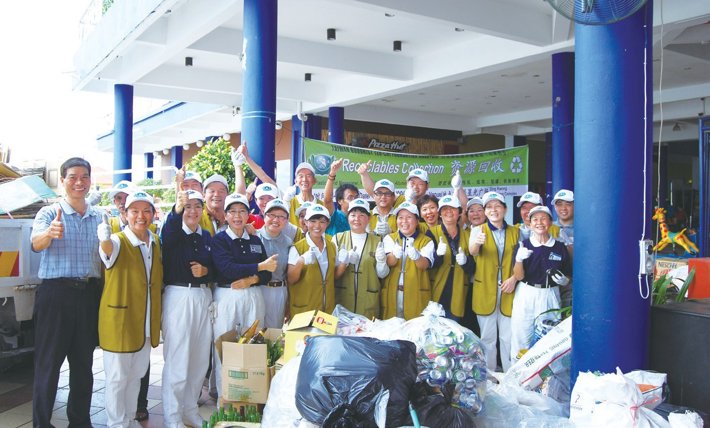
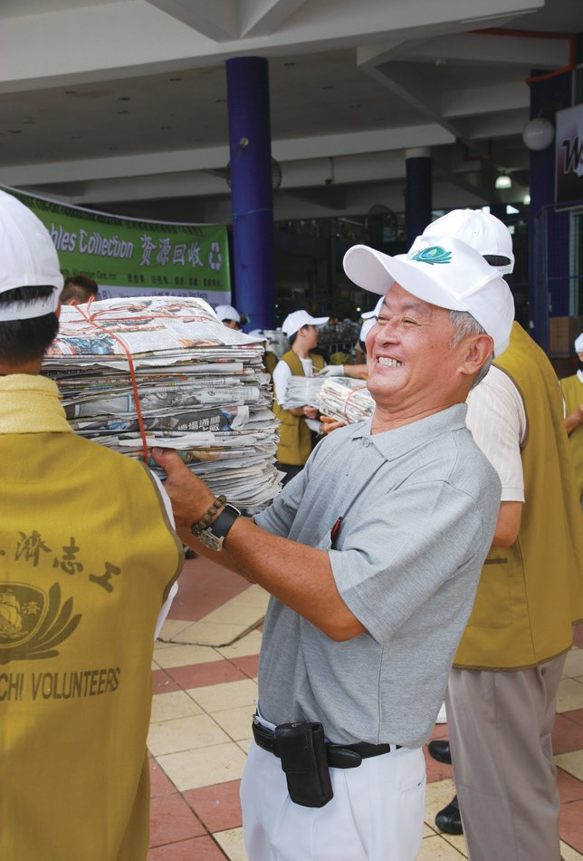
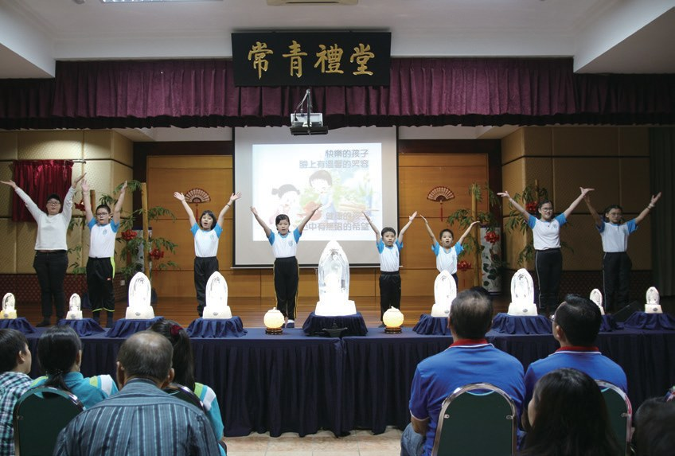
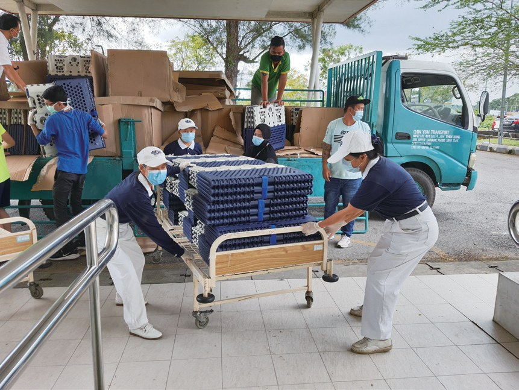
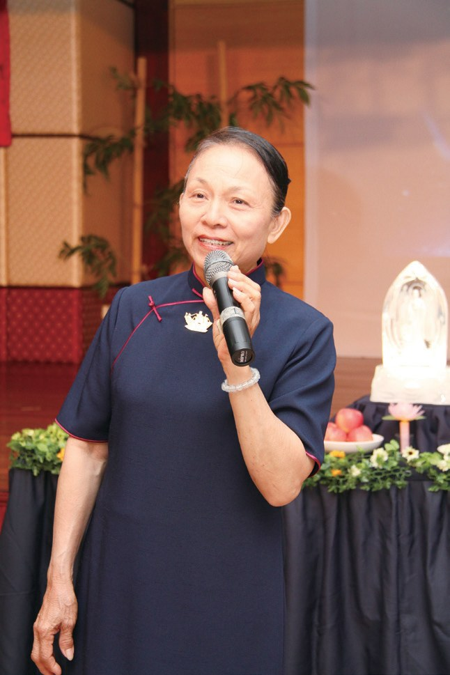
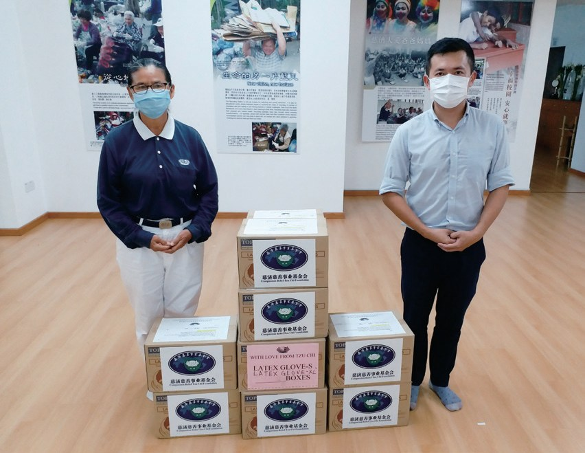
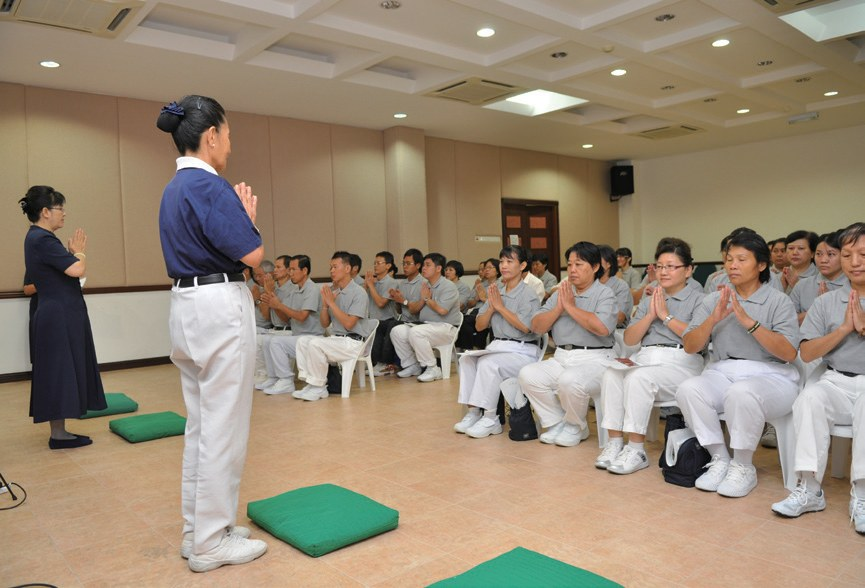

詩巫聯絡處
每個月只收一令吉的租金，房東在想什麼？

先別急著下結論，讀完再說說你的想法～
這一篇講詩巫聯絡處：2009年，古晉志工飛了四百多公里，在砂拉越州第三大城市辦了第一場活動。
你會讀到一令吉的租金、三種信仰一起大掃除、從懷疑到信任的老人院，還有一位從照顧戶變成委員的志工。
下面是原書的節錄，紅色底線是我們替你標出的轉折點。
讀之前：被人幫助過的人，後來可能變成什麼樣子？
從一場歲末祝福開始
2009年，古晉志工飛抵詩巫。閱讀引導
2009年為了在詩巫拓展慈濟足跡，1月14日古晉聯絡處負責人賴奕娃（慈薇）一行人飛抵詩巫，於麗華酒店舉辦歲末祝福。這是慈濟在詩巫的首次活動，共有75位會眾參與，有27位發心加入會員，……

只為辦一場活動！
詩巫大德舒文華常收看大愛臺，對慈濟的善行很欽佩，但一直沒有因緣走入慈濟。2009年4月19日她在砂廉星光廣場遇到慈濟人在舉辦環保日，她立即加入分類回收資源的行列。

猜一猜閱讀引導
舒文華借出的店屋因故要出售，志工只能另找地點。實業家劉世南把自己的店屋租給慈濟三年，每個月租金是多少？
起初由於屋主對佛教有所誤會，詩巫慈濟人兩度被拒絕，在戴瑋薇的努力說明下，才讓業主將屋子出租給詩巫聯絡處，並於2013年1月正式遷入。
還是慢慢說明白！
- 68人志工p.824
- 4,747人會員p.824
走進需要的家
一位無法站立的父親，和他的家。閱讀引導
2009年9月13日，23位詩巫志工與4位古晉志工前往鄭世平的家中進行大掃除，鄭世平雖因身體狀況而無法清掃，但仍囑咐三位孩子一起幫忙整理。
「你們是佛教徒，鄭先生是基督教徒，而我是穆斯林，我們卻因為這個因緣融合在一起，真是太好了！」
負責運送的司機依迪利斯讚歎地表示・p.825
一起打掃一個家！
細心核對資料，進而發現有很多學生是單親家庭，還有些是兄弟姊妹眾多。所以除了助學金發放外，志工也將貧困家庭轉為長期慈善個案，持續關懷。
「很多單親家庭的孩子，由年老的祖父母照顧，根本沒有能力負擔學費，連紙和筆都沒有。……」
教師陳孔美表示・p.828老人院和監獄
志工走進很少有人去的地方。閱讀引導
參與會眾很熟悉資源分類，志工好奇的詢問，才得知大部分的人都是大愛臺的觀眾，因此對環保分類有相當瞭解。

在大愛臺學會了！
詩巫志工覺得需要有固定的場所做環保，遂領養詩巫市議會轄下位於中華路菜市場後方的空間，於2010年1月1日成立詩巫首間環保站。

2011年9月11日，詩巫志工首次到烏驛路十三哩政府老人院關懷，往後志工定期每兩個月到訪一次，幫忙長者理髮、修剪指甲和按摩談天；
數年的陪伴，讓長者和管理員從懷疑到信任，進而期待志工的到來，培養如同家人般的情感。

靠的是時間。
監獄委員會邀約慈濟進入監獄關懷，輔導信仰佛教的獄友接觸佛法，從心靈懺悔過錯。2014年4月1日詩巫慈濟人第一次進入詩巫監獄，後續定期每月兩次關懷。
經過三個月的籌備與招生，詩巫第一屆親子班終於在2015年6月14日開課，共有13對親子報名參加。

醫院最需要的時刻
一場大火，和一場疫情。閱讀引導
2013年6月19日，位在甘榜拿督的馬來村莊發生大火，造成逾六十間木屋毀損，596人流離失所。
此次火災援助為詩巫慈濟首次急難救助，志工汲取經驗，奠定往後急難發放的基本模式。
變成以後的模式。
2021年1月，詩巫醫院作為砂拉越州中部唯一的政府醫院，面臨病床短缺問題，遂向慈濟借調福慧床備用。

「身為院長，我僅代表詩巫人感恩慈濟在醫院最需要的時刻給予援助。我相信只要同心協力抗疫，我們必定可以戰勝疫情。」
院長南塔古瑪醫師表示・p.833翻轉手心
一位基督徒負責人，和第一個長期照顧戶。閱讀引導
戴瑋薇出生於臺灣屏東，後來遠嫁馬來西亞，婚後卻飽受婆媳問題之苦。
「婆婆現在退化，我就把她當成孩子來照顧，相處久了漸漸發覺她變得越來越可愛。」
戴瑋薇說・p.835越看越可愛。
戴瑋薇身體力行帶動志工，她天天都到拉讓花園環保站做環保，幾乎全年無休，連大年初一也不例外。

陳玉娟出生於馬來西亞砂拉越州古晉，自幼家貧，小學三年級即輟學販賣糕餅，貼補家用。
2004年6月慈濟人家訪後，開案補助這個家庭，成為詩巫慈濟第一個長期照顧戶。
後來怎麼樣了？
陳玉娟本來不太敢面對人群說慈濟，但為了響應「百萬好菩薩」招募有心人，她鼓起勇氣，走入市場募心募愛，最後過半的攤商都成為她的會員。

停一停：誰讓你記住了？閱讀引導
選一位你印象最深的人。沒有標準答案。
有人在環保日遇見慈濟就加入，有實業家只收一令吉租金，有負責人連大年初一也做環保，有照顧戶變成募款的人。哪一位讓你最有感覺？

一起回頭看看吧～
回望
依本章原文整理，每一條都標了原書頁碼。閱讀引導
背後原因
詩巫怎樣有了共修處

小川一開始沒有場地，後來怎麼會有共修處？
- 借出店屋
舒文華要把店屋二樓借給慈濟。p.823

另尋地點店屋要出售，志工只能另找地方。p.823
- 一令吉的租金
劉世南出租店屋，詩巫共修處啟用。p.823
後續發展
詩巫一路走來

小禾從第一場歲末祝福到支援福慧床，經過了多少年？
- 2009.1.14
慈濟在詩巫的首次活動。p.823
- 2009.4.19
星光廣場環保活動。p.826
- 2010.1.1
詩巫共修處啟用。p.823
- 2010.11.21
首次新芽助學金頒發典禮。p.829
- 2012.2.9
升格為聯絡處。p.824
- 2021.2
支援詩巫醫院福慧床。p.833
陳玉娟的轉變
以前和後來
小川投入慈濟以後，陳玉娟有什麼不同？
- 詩巫第一個長期照顧戶受證成為慈濟委員p.837–838
- 不太敢面對人群說慈濟走入市場募心募愛p.838
- 需吃藥才能入睡減少了用藥p.837–838
以上只整理本章寫到的事；書裡沒寫到的，我們不替它下結論。
回頭看讀前的選擇閱讀引導
陳玉娟曾是詩巫慈濟第一個長期照顧戶（p.837）；後來她鼓起勇氣走入市場，過半的攤商都成為她的會員（p.838）。接受幫助的人，也能成為幫助別人的人。
出來以後會怎麼過日子？
只有你自己看得到喔！
準備好了就一起出發～